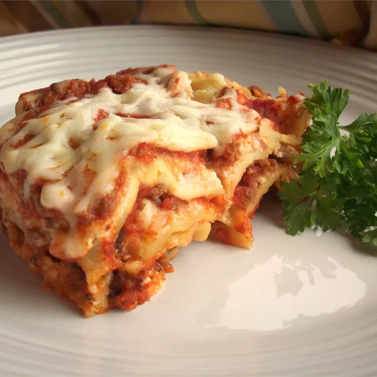

Home
Lasagna Recipe

Lasagna is a classic Italian dish made with layers of pasta, meat, cheese, and sauce. It's a hearty and
comforting meal that's perfect for family gatherings or special occasions.
Ingredients:
- 12 lasagna noodles
- 1 pound ground beef
- 2 cups ricotta cheese
- 2 cups shredded mozzarella cheese
- 2 cups marinara sauce
- 1/2 cup grated Parmesan cheese
- 1 egg
- Salt and pepper to taste
Instructions:
- Preheat the oven to 375°F (190°C).
- Cook the lasagna noodles according to package instructions. Drain and set aside.
- In a skillet, brown the ground beef over medium heat. Drain excess fat.
- In a bowl, mix ricotta cheese, egg, salt, and pepper.
- Spread a layer of marinara sauce on the bottom of a baking dish.
- Layer noodles, ricotta mixture, ground beef, marinara sauce, and mozzarella cheese. Repeat layers.
- Top with remaining mozzarella and Parmesan cheese.
- Bake for 30-40 minutes until bubbly and golden brown.